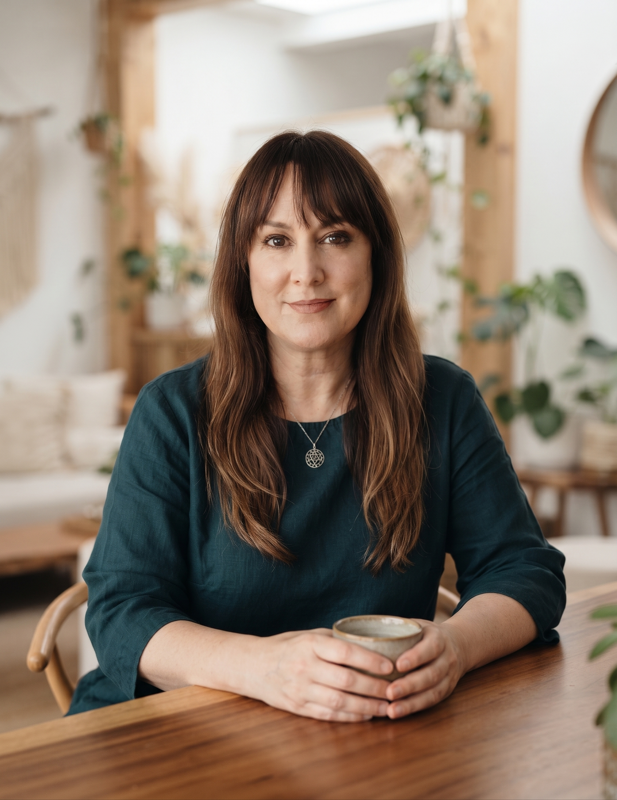

«El arte milenario de magnetizar la columna vertebral para que la energía ascienda de la inercia a la iluminación».
Enfoque:Columna Sushumna & Bīja Mantras
Tradición:Linaje de Conciencia & Presencia Somática
Nivel:Desde Iniciación hasta Profundización
La Ciencia de Sushumna Nadi
En la anatomía sutil del yoga, el canal central (Sushumna) corre a lo largo de la médula espinal. Mientras la mente ordinaria oscila entre la dualidad de Ida (hemisferio derecho/femenino) y Pingala (hemisferio izquierdo/masculino), Kriya une ambas corrientes en un solo eje vertical.
Al hacer ascender la energía pranayama a través de los 7 centros con concentración y sonido, despolarizamos la reactividad nerviosa y accedemos al estado de testigo calmo (Samadhi).
Componentes de la Iniciación
Bīja Mantras Raíz: Vibraciones acústicas primordiales (LAM, VAM, RAM, YAM, HAM, OM) para afinar cada vórtice.
Pranayama Vertical: Respiración circular guiada por la columna que descalcifica la percepción rígida.
Mudras de Sellado: Gestos corporales precisos como Shambhavi y Khechari para conservar la corriente sutil.

«Kriya no es una gimnasia ni una postura estética; es un laboratorio interno donde tu propia espina dorsal se convierte en el altar donde ofrendas el ruido para recibir la majestad del silencio».
Sofía · Facilitadora de Siete Centros
INICIA TU CAMINO EN KRIYA
Recibe la transmisión personalizada de la práctica de Kriya Yoga para tu propia constelación energética con el acompañamiento de Sofía.